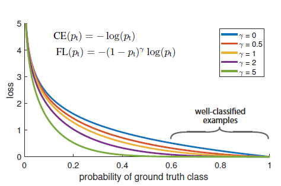

本篇论文是由FaceBook研究院的Tsung-Yi Lin, Priya Goyal, Ross Girshick, Kaiming He, Piotr Dollár所作的Focal Loss for Dense Object Detection, 发表在2017年CVPR上.
收获总结
作者针对目标检测领域one-stage模型比two-stage模型结果差的情况,作者提出了一种改进的loss称为focal loss.focal loss可以解决one-stagem目标检测中正负样本不均衡的问题.作者认为单级结构准确度低是由类别失衡引起的,即背景太多,目标(前景)太少.Two-stage方法中,由于先生成了一系列region proposal. 经过这一步,很多背景都被剔除了, 可以平衡一部分样本数量
Focal loss是在二分类交叉熵的基础上进行改进的.交叉熵定义如下
变换得,
交叉熵可变形为$CE(p,y)=CE(p_t)=-log(p_t)$,这种损失的一个性质是如果数据非常好分类($p_t \gg 0.5$).那么该样本的loss有一个较小的量级，因为存在大量的易分类负样本，这些loss相加后会淹没正样本的loss。为了解决正样本和负样本不平衡，一种方法是引入一个权重因子$\alpha$,则损失函数改进为$CE(p_t)=-\alpha\log(p_t)$, 当负样本越多, 我们将$\alpha$调的越小, 就可以降低负样本的影响.但是这样的改进没有解决简单样本和复杂样本之间的不平衡.于是,针对easy和hard样本定义损失函数$FL(p_t)=-(1-p_t)^\gamma\log(p_t)$,这样，当对于简单样本，$p_t$会比较大，所以权重自然减小了。针对hard example，$p_t$比较小，则权重比较大，更改$\gamma$的值,让网络倾向于利用这样的样本来进行参数的更新。

最终,将这两种方法综合在一起, 改进后的Focal loss为
其中$\alpha, \gamma$为超参. 通过Focal loss既做到了解决正负样本不平衡，也做到了解决easy与hard样本不平衡的问题。